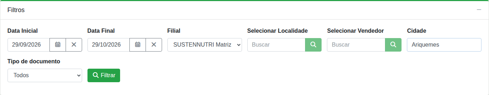

Dar um nome e buscar os documentos
Ao clicar em Novo, abre a tela de montagem. Em “Nome da Ordem de Carregamento”, dê um nome que identifique a carga (ex.: destino ou rota). No quadro Filtros:
| Filtro | Observação |
|---|---|
| Data Inicial / Data Final | Data do documento. Já vem preenchido com o último mês. |
| Filial | Obrigatório. Sem filial o botão “Filtrar” fica desabilitado (“Escolha a filial para filtrar.”). |
| Selecionar Localidade | Opcional. Para tirar o filtro, clique em “limpar” abaixo do campo. Sem localidade, aparecem também os documentos que não têm localidade cadastrada. |
| Selecionar Vendedor | Opcional. |
| Cidade | Opcional. Busca pela cidade de entrega, com ou sem acento (ex.: “Porto Velho”). |
| Tipo de documento | Todos, Pedidos ou NF de venda futura. |
Clique em Filtrar.

Observação
O resultado vem em páginas de 30 documentos. Se houver mais, use “Carregar Mais” no fim da lista. Trocar um filtro só vale depois de clicar em “Filtrar” de novo.